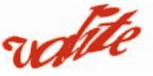

Tarkvaraliselt peavad pildid omama alternatiivteksti (<img src="pilt.jpg" alt="Siia tuleb pilti kirjeldav tekst">). Nõue on oluline ekraanilugeri kasutajate jaoks.
Alternatiivne tekst peaks olema kirjeldus sellest millised näevad välja isikud või ese pildil ning milline on selle taust. Kirjeldus pildil aset leidvast sündmusest peaks olema pildi pealkiri, mis on nähtav ja ligipääsetav kõigile.
Pilt omab alternatiivset teksti: "Taavi Rõivase ja Barack obama kohtumine".
Pildi pealkiri: puudub.
Pilt omab alternatiivset teksti: "Barack Obama ja Taavi Rõivas surumas kätte. Tegevus toimub õues ning tagataustal paistab lennuk. Mõlemad kannavad tumesiniseid ülikondasid" ning pildi nähtav pealkiri: "2014. aasta 3. septembril Taavi Rõivas kätlemas USA president Barack Obamaga".
Alternatiivtekst peaks olema tagatud ka nuppudel ja linkidel, mis on esitatud pildina. Tekst peaks sisaldama infot, mida nupp või link teeb.
Pildina kujutatud nupp omab alternatiivtekst: "homeicon".
Pildina kujutatud nupp omab alternatiivtekst: "Link viib pealehele".
Kui kasutatakse robotilõkse, siis peaksid need pildi asemel sisaldama mõnda lihtsat küsimust, millele on ligipääs ekraanilugeril. Küsimus võib turvalisuse eesmärgil muutuda iga kord ning omada sisu, millele vaid inimesed oskavad vastata.
Robotilõks nõuab kasutajalt pildil kujutatud numbrite või tähtede sisestamist.
Robotilõks sisaldab küsimust, millele vaid inimesed oskavad vastata, näiteks "Mis on Eesti pealinn?".